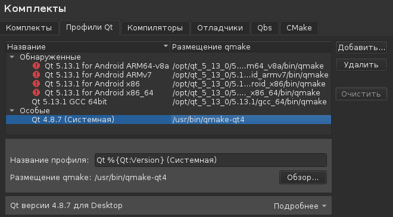
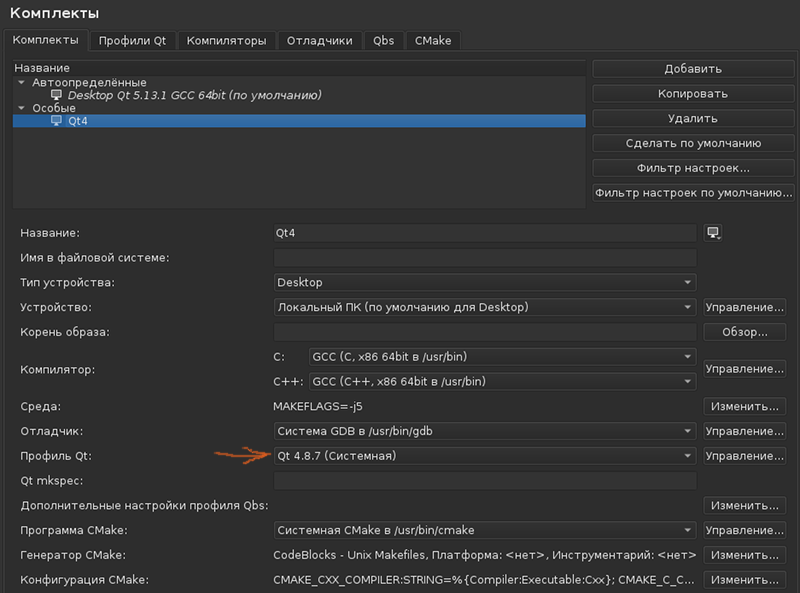

У программистов Qt может возникнуть необходимость настройки среды QtCreator для работы с устаревшими версиями библиотеки Qt. Ниже рассказывается о том, как настроить сборочный комплект в QtCreator 4.10 (поставляемый в наборе с Qt 5.13.1) так, чтобы работала сборка с библиотеками Qt4. Предполагается, что QtCreator 4.10 и Qt 5.13.1 развернуты из установочного пакета Qt 5.13.1, взятого с официального сайта http://qt.io.
Библиотеки Qt4 устанавливаются в систему через пакетный менеджер. Нужно установить примерно следующие пакеты:
Далее запускается QtCreator 4.10, вызывается пункт меню Инструменты -> Настройки -> Комплекты. В нем нужно открыть вкладку "Профили Qt", и в разделе "Особые" надо нажать кнопку "Добавить" и в качестве qmake указать:
/usr/bin/qmake-qt4
В результате этого, в разделе "Особые" будет создана запись Qt 4.8.7 (Системная).

После чего надо обязательно нажать кнопку "Применить" и переключиться на вкладку "Комплекты". В разделе "Особые" будет виден новый комплект "Без названия". Если такового нет, надо просто нажать кнопку "Добавить". В открывшихся настройках надо указать профиль Qt в виде Qt 4.8.7
